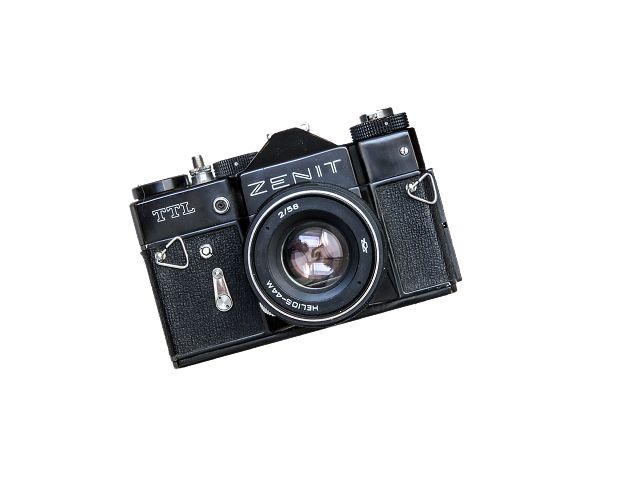
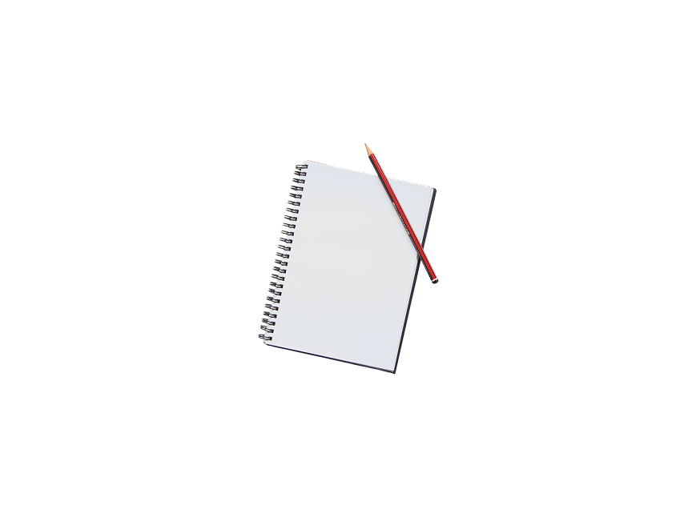
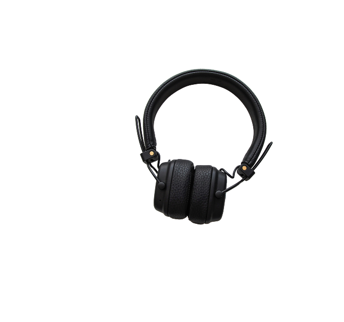
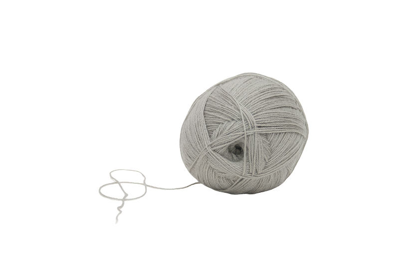
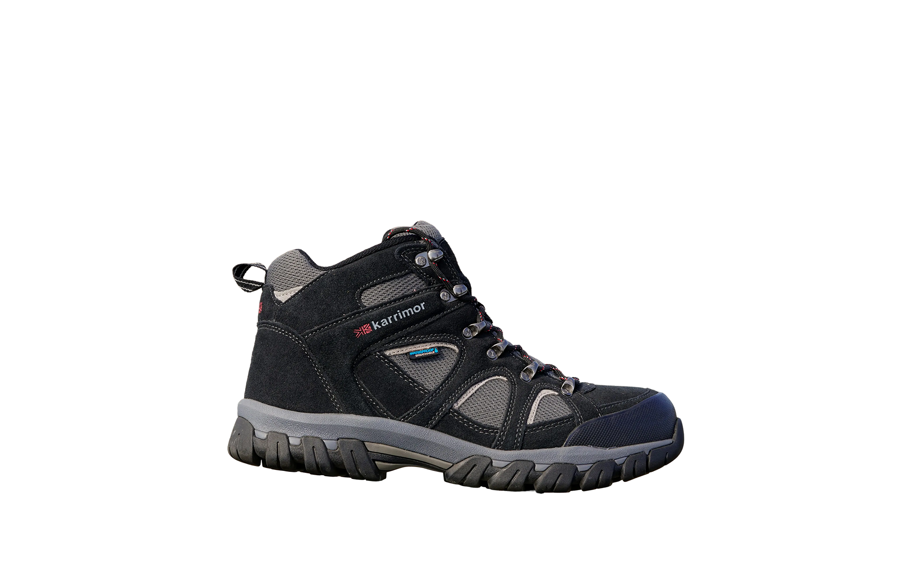
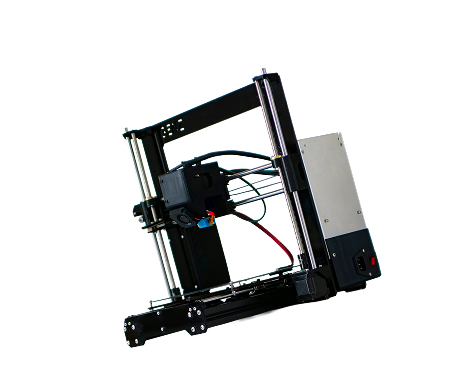

Anne-Sofie Brandt
Jeg er Anne-Sofie
Jeg læser multimediedesign og har altid haft svært ved kun at holde mig til én kreativ ting. Jeg kan både finde på at sidde og strikke, tage billeder, rode med 3D-print eller bruge alt for lang tid på at få et design til at sidde helt rigtigt.
Det er nok også derfor, jeg godt kan lide multimediedesign. Jeg behøver ikke vælge mellem det kreative og det tekniske. Jeg kan både sidde med en idé i Figma og bagefter bygge den i kode.
Jeg interesserer mig især for UX/UI, webdesign, grafisk design, fotografi og motion graphics. Jeg kan godt lide at starte med noget, der måske ikke er helt færdigt endnu, og så finde ud af undervejs, hvad det kan blive til.
Hvem er jeg?
Jeg er ret nysgerrig af natur og får hurtigt lyst til at prøve nye ting. Jeg lærer bedst, når jeg selv får lov til at sidde med det og finde ud af, hvordan det fungerer.
Jeg går meget op i detaljerne, men prøver samtidig ikke at gøre alting mere kompliceret end det behøver at være. Et design må gerne være flot, men hvis man ikke kan finde ud af at bruge det, så er der noget, der skal laves om.
Jeg kan godt lide at arbejde selvstændigt og fordybe mig, men jeg sætter også pris på at få andre øjne på det, jeg laver.
Mine personlige interesser
Hold musen over et billede for at se hvorfor






Hvad kan jeg?
Klik på en kategori for at se mere.
Jeg arbejder med at skabe digitale løsninger, der er nemme og intuitive at bruge. Jeg tænker især over brugerens behov, struktur og hvordan designet kan gøre oplevelsen bedre.
Jeg kan godt lide at arbejde med hjemmesiders visuelle udtryk og opbygning. Jeg arbejder med layout, typografi, farver og responsivt design, så siden både ser godt ud og fungerer på forskellige skærme.
Jeg arbejder gerne med visuel identitet, plakater, sociale medier og andre grafiske løsninger. Jeg synes især, det er spændende at lege med typografi, farver og komposition for at skabe et tydeligt udtryk.
Jeg kan godt lide at give design liv gennem bevægelse. Jeg arbejder med animation og simple visuelle effekter for at gøre indhold mere levende og skabe mere opmærksomhed.
Fotografi er også en stor interesse for mig. Jeg kan godt lide at arbejde med lys, komposition og stemning og bruger ofte fotografi som en del af mine kreative projekter.
Jeg kan lide kombinationen af design og kodning. Jeg arbejder med HTML, CSS og JavaScript og synes især, det er fedt at kunne tage et design fra Figma og bygge det til en fungerende hjemmeside.
Lad os arbejde sammen
Har du et projekt i tankerne? Skriv til mig, så tager vi en snak.
Send en mail